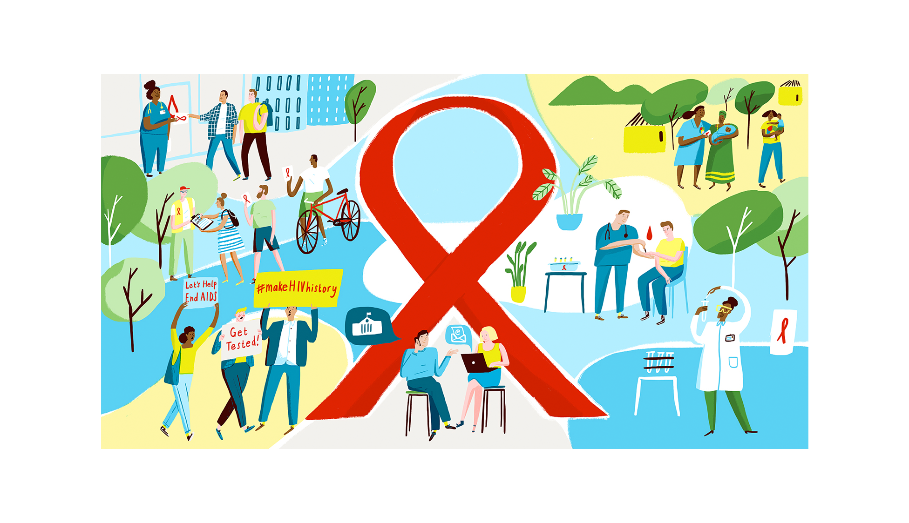
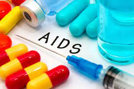

What is HIV?
HIV (human immunodeficiency virus) is a virus that attacks the body's immune system. If HIV is not treated, it can lead to AIDS (acquired immunodeficiency syndrome).
There is currently no effective cure. Once people get HIV, they have it for life.
But with proper medical care, HIV can be controlled. People with HIV who get effective HIV treatment can live long, healthy lives and protect their partners.
HIV is caused by a virus. It can spread through sexual contact, illicit injection drug use or sharing needles, contact with infected blood, or from mother to child during pregnancy, childbirth or breastfeeding. HIV destroys CD4 T cells — white blood cells that play a large role in helping your body fight disease.
Possible symptoms for HIV/ADIS
Fever.
Chills.
Rash.
Night sweats.
Muscle aches.
Sore throat.
Fatigue.

The classes of anti- HIV drugs include: Non-nucleoside reverse transcriptase inhibitors (NNRTIs) turn off a protein needed by HIV to make copies of itself. Examples include efavirenz (Sustiva), rilpivirine (Edurant) and doravirine (Pifeltro).
But if you have HIV and take ART drugs, the virus still lives inside a group of cells called the HIV reservoir. If you stop taking ART, the virus in the reservoir can spike again. Right now, there's still no complete cure for HIV infection.
There are two types of HIV treatment: pills and shots.
Pills are recommended for people who are just starting HIV treatment.
People who have had an undetectable viral load (or have been virally suppressed) for at least three months may consider shots.
